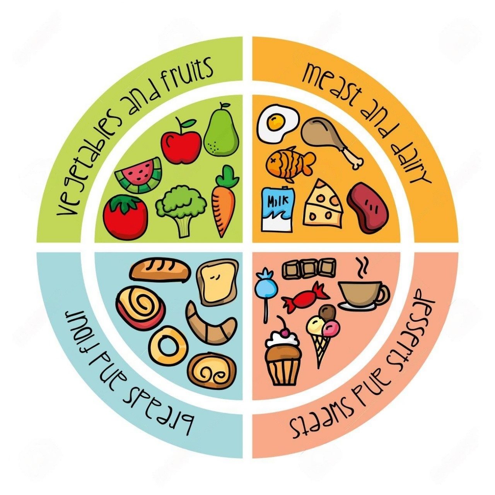
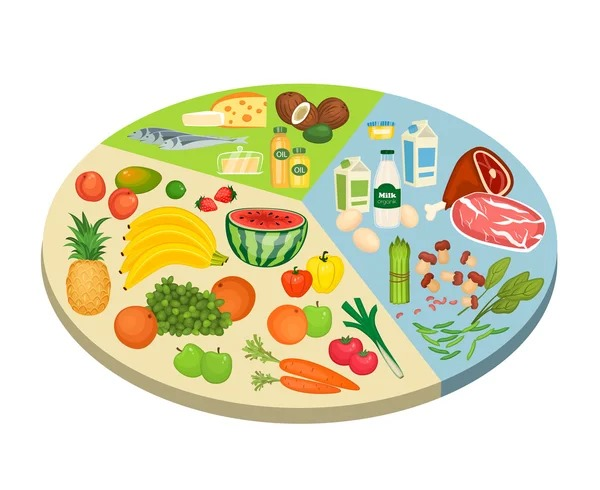

NUTRIVAM
CONOCE SOBRE LA NUTRICIÓN
¿Sabias que tan importante es tu nutrición y alimentación?
La nutrición es el proceso biológico en el que los organismos asimilan los alimentos sólidos y líquidos necesarios para el funcionamiento, el crecimiento y el mantenimiento de sus funciones vitales. La nutrición también es el estudio de la relación que existe entre los alimentos, la salud y especialmente en la determinación de una dieta equilibrada con bases a la pirámide alimenticia.
La buena nutrición consiste en comer una variedad de alimentos, limitar el consumo de ciertos alimentos, bebidas y controlar la cantidad de alimentos y calorías que se ingieren. Una alimentación equilibrada ayuda a reducir el riesgo cardiovascular porque reduce tanto el colesterol y la presión arterial como el peso.
Muchas enfermedades comunes y sus síntomas frecuentemente pueden ser prevenidas o aliviadas con una determinada alimentación; por esto, la ciencia de la nutrición intenta entender cuáles son los aspectos dietéticos específicos que influyen en la salud.

